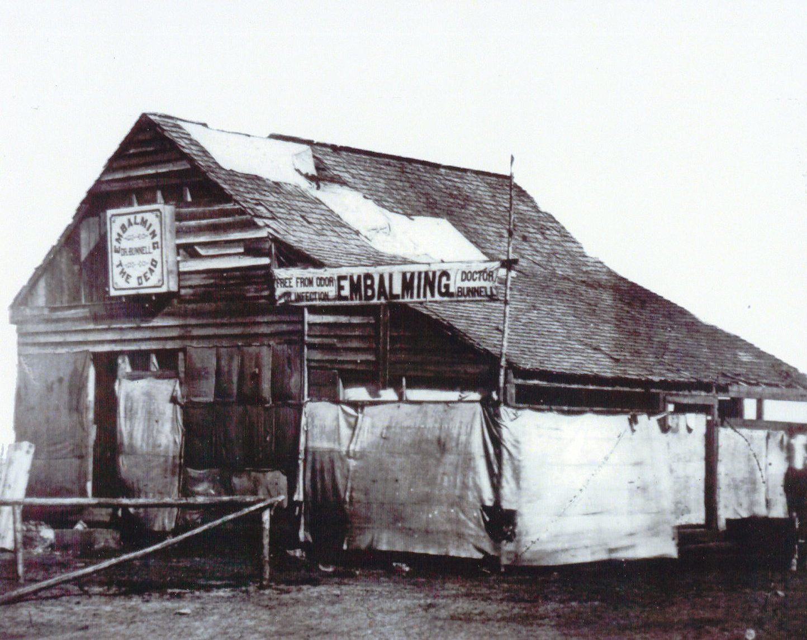
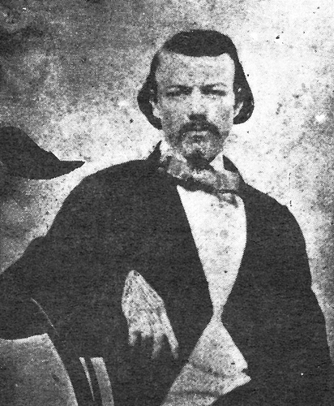
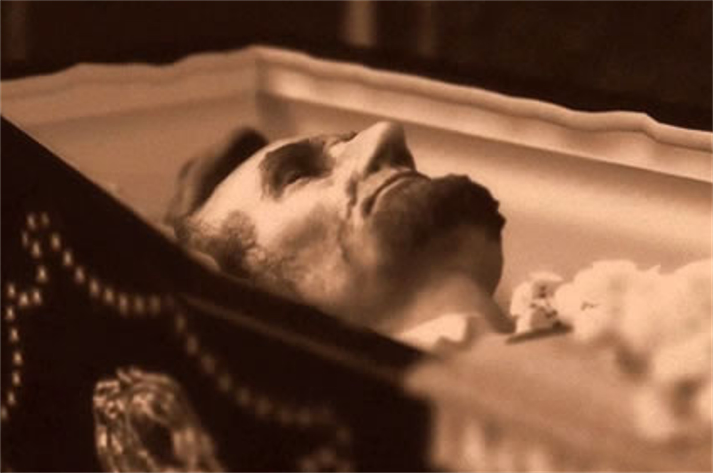
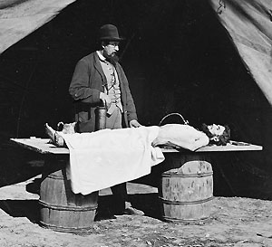

|
The art and science of arterial embalming actually got its
start in the early part of the 17th century when William
Harvey, an anatomist, announced his discovery of the
circulatory system. Other anatomists, such as Dr. Fredrick
Ruysch of Holland, Jean Gannal of Paris, and John and
William Hunter of Scotland, experimented with various
methods and chemicals for the preservation of dead human
bodies, primarily for dissection in medical schools.
Embalming for funeral purposes was an expensive procedure,
so only a few people of nobility were embalmed.
Chemist Jean Gannal
Dr. Jean Gannal searched for a chemical formula he could
inject into medical school cadavers so they could be held
for dissection. Over a period of several years he tested the
preservative powers of acids, alkaline salts, creosote,
alcohol, and various combinations of arsenic, zinc, alum,
sodium chloride, bichloride of mercury, and chloride of
alumina.
After doing hundreds of embalming tests, Gannal decided
on a formula that could preserve the body and be safe for
students doing dissection. His procedure consisted of
injecting six quarts of a solution of acetate of alumina,
sulfate of alumina, sodium chloride, and sodium nitrate into
the carotid artery without any venous damage. He also
recognized that bodies embalmed for funeral purposes would
have to be prepared differently than anatomical subjects.
In 1838, Gannal wrote a book describing his chemicals and
methods of injection. He noted that the base solution used
for embalming bodies for funerals should have a small
quantity of red dye to give the body a pinkish coloration
and a small quantity of arsenic added.
In Paris, a man of prominence died and his widow had Dr.
Gannal prepare the body. Later, the legal authorities
suspected foul play and a postmortem examination revealed
arsenic in the deceased's tissues. The man's mistress was
charged with murder. When it looked as though the woman
would be convicted, Dr. Gannal came forward and informed the
court that he had used arsenic in the embalming fluid, and
therefore, she could not be convicted on that evidence. The
woman was released. This trial led to the enacting of laws
forbidding the use of arsenic in embalming chemicals.
Arsenic was outlawed from embalming compounds in Europe
in the 1840s, but it was not illegal in the United States
until the 1870s.
Embalming in the United States
In 1840, Dr. Richard Harlon translated Gannal's book into
English. It was brought to the United States and used in
medical schools to train physicians in embalming procedures.
At the time of Gannal's discovery, Drs. Sucquet and Pilate,
also of Paris, claimed to have discovered a new process for
preserving the dead. Pilate went to New York in 1842 where
he embalmed several bodies for demonstration. He injected
the carotid artery as did Gannal. The U.S. rights to his
process were sold to a Dr. Charles Brown, who opened an
office in New York in 1845.
At this time, some embalming for persons of wealth and
prominence did occur. For example, when John Quincy Adams,
sixth President of the United States, died on February 23,
1848, Drs. Espy and Lee of Washington D.C., were summoned to
the U.S. Capitol where Adams' body was embalmed with a
solution of salts and poisonous metals.
Cast iron burial cases were patented in the 1840s. One of
the best known and most ornate was the Fisk burial case,
patented in 1848 by A. D. Fisk of New York, who developed
the casket because of his brother's death. Fisk's brother
died in Mississippi and his father wished his remains to be
brought back for burial in the family cemetery. However, the
climate had brought about a rapid deterioration of the body
and since no method was available at that time to arrest the
decomposition, the project was abandoned.
After 4 years of experimenting and testing various
products, Fisk succeeded in perfecting the Fisk metallic
burial case. The Fisk Foundry of New York began production
by 1850 and the cases were available at the cost of $7 to
$40, depending on the size. The case consisted of an upper
and lower shell in mummiform shape. It was made air tight by
putting a groove where the edges joined, then by filling the
groove with a sealing compound. The lid was bolted down. A
thick plate of glass over the face for viewing was protected
by a cast iron cover. Embalmed bodies placed in these cases
have been found in an excellent state of preservation.
Father of Modern Embalming
Dr. Thomas Holmes is called the "Father of Modern
Embalming" because of his efforts to advance the science
during and after the Civil War. He studied medicine in New
York at the College of Physicians and Surgeons in 1844-45
but there is no record of him completing medical school. He
was trained in embalming by an assistant of Gannal's and
became quite proficient at the process prior to the Civil
War by testing chemicals on bodies coming through the New
York Coroner's Office.
Early in May 1861, Dr. Holmes went to Washington, D.C.,
where he hung out his shingle, "Embalming the Dead--Dr.
Thomas Holmes." When the war broke out, no one in government
had heard of embalming the dead. Holmes' big break came on
May 24, 1861 when Colonel Elmer Ellsworth climbed atop the
Marshall House Inn in Alexandria, Virginia, in an attempt to
take down the Confederate flag. He was killed by a shotgun
blast to the chest. Ellsworth, a personal friend of
President Abraham Lincoln, had been a law clerk in Lincoln's
law office in Springfield, Illinois and came to Washington
D.C., with Lincoln when he was elected President. He was
also the organizer of the Zouaves, a brigade of New York
firemen. Ellsworth's body was taken to the Washington D.C.,
Naval Yard where Secretary of State William H. Seward was
informed of his death. Seward approached Lincoln and
convinced him to allow Dr. Holmes to embalm the body for
shipment back to New York for burial. After embalming, the
body was placed in a Fisk cast iron burial case and taken to
lie in state in the East Room of the White House. Later
Ellsworth's body was taken to New York to lie in state and
was buried in Mechanicsville, NY.
Since Ellsworth was one of the first people of prominence
to die during the war, the press gave Holmes and the new
procedure of embalming plenty of free publicity. Embalming
surgeons then began to do a thriving business.
Embalming Procedure
Embalming was accomplished by injecting the chemical
solution into the carotid artery at the neck or the femoral
artery in the upper thigh. Drainage of the blood was not
usually accomplished during this period and was not
necessary if the person bled to death. However, there are
some accounts of drainage during the embalming of President
Lincoln, which was described as injecting the femoral artery
and draining the jugular vein.
Embalming surgeons often followed the armies with their
own wagons of equipment and supplies. Their offices were set
up in tents, barns, and other suitable structures. They had
a variety of ways for obtaining business. Hospitals provided
a major source of business. Early in the war they went out
into the camps and passed out fliers that encouraged
soldiers to pay for their embalming before going into
|

An embalming business that set up
shop on the battlefield at Fredericksburg
|
battle. This began to affect morale and officers put a stop
to the practice. Advertisements for embalming services
appeared in newspapers. Friends and family often followed
the armies around and when learning of the death of their
loved one would contract with the surgeon to prepare and
ship the body home for burial.
Sometimes the body was recovered quickly. Other times it
was in an advancing state of decomposition, swollen, or
maggot-infested, and usually unidentifiable. Sometimes just
a skeleton was found. When possible, the body was arterially
injected but if not, the body was disinfected. It had to be
free from odor before the railroad would accept it for
shipment. A body would be treated chemically as best as
could be done, and the internal organs were removed and
buried or burned.
Coffins, caskets, and cast iron burial cases were
supplied to the embalming surgeons by undertakers or
suppliers in the area where they were working at the time.
The selected coffin was lined with sheets of metal, and a 3-
or 4-inch layer of charcoal, straw, or sawdust was spread in
the bottom of the coffin. The body was placed in the coffin,
covered with charcoal, straw, or sawdust and saturated with
preservative chemicals and sealed.
The costs for embalming varied during the war. At the
beginning Dr. Holmes charged $100. By 1863, charges varied
from $25 for enlisted men to $50 for officers. There are
estimates ranging from 10,000 to 40,000 soldiers being
embalmed during the war. Dr. Holmes claimed to have embalmed
4,028 men. Sadly, most soldiers were buried crudely where
they fell. If it was possible to identify them, the
information was recorded on a piece of paper, put in a
bottle, and wrapped in the blankets surrounding them
The Story of William Shy
Colonel William Shy was killed in the Battle of Nashville
in 1864. When his family learned of the whereabouts of his
remains, a family friend and physician, Dr. Daniel Cliffe,
|

Col. William Shy
|
was dispatched to Nashville to retrieve and return the body.
Dr. Cliffe located and embalmed Col. Shy with an arsenic
solution. He then purchased a Fisk burial case. The body was
returned to Franklin, Tennessee, where it was buried in the
family cemetery on his estate.
In 1977, the Shy mansion was having some restoration
performed when workers noticed a disturbance at the
cemetery. Upon investigation they found that the grave of
CoL Shy had been opened. A hole had been made in the cast
iron case and a body was protruding half in and half out of
the case. The sheriff was summoned and felt he had a recent
homicide, with someone attempting to hide the body in the
grave. The body was then sent to Nashville, where Dr.
William Bass was called to do an examination. He noticed the
clothes were not made of any synthetic fibers and the frock
coat was not of our time. Upon testing of the tissues he
determined it to be embalmed with arsenic. The body, in
excellent state of preservation 113 years after his death,
was determined to be Col. Shy. He was placed in a new casket
and reinterred. The original Fisk case was sent to the
Smithsonian in Washington D.C., where it was cleaned and
restored. It is now on display at the Carter House Museum in
Franklin, Tennessee.
Embalming President Lincoln
Dr. Henry Cattell embalmed Willie Lincoln, son of Abraham
Lincoln, on February 20, 1862, and later embalmed the
President following his death on April 15, 1865. However, it
was Dr. Charles Brown who actually rode in Lincoln's funeral
train from Washington D.C., to Springfield, Illinois. Their
charges were $100 for the embalming and $160 for Dr. Brown
to accompany the body. Lincoln's body was put in a solid
mahogany casket with a lead liner. There were various
statements concerning the condition of Lincoln's body on the
trip. However, the body was in an excellent state of
preservation, having been injected with a zinc chloride
|

President Lincoln in his coffin
|
solution. Lincoln's eyes had turned black when he was shot
in the head and Secretary of War Stanton ordered that no one
could cover the discoloration because, "He wanted them to
see what had been done to their President." However, in each
city the funeral train visited, as a matter of courtesy, a
prominent local undertaker was called upon to board the
train and make adjustments, including the addition of white
powder to lighten Lincoln's ever-darkening eyes.
After all funerary services, Lincoln's body was put in a
temporary crypt. In 1876, a plot to steal his body and hold
it for ransom was discovered and foiled. A plan was then
discussed to bury Lincoln's body under a pile of debris in
front of the permanent memorial they were constructing. A
plumber was summoned to cut a hole in the lead lining of the
coffin over the face. He and three of Lincoln's associates
peered into the coffin to verify it was the President's
body. The liner was resealed and then Lincoln was reburied.
In 1901, when the Lincoln Memorial was completed, the same
plumber was again called upon to open the lead liner over
Lincoln's face so they might verify that it was indeed
Lincoln. Those who looked upon his face for the last time
remarked that although he had a white powdery appearance, he
looked much as he had 36 years before at his entombment.
Embalming Surgeons
There are accounts of other embalming surgeons such as
Dr. William J. Bunnell, who was married to Dr. Holmes'
sister. During their courtship he became interested in
Holmes' experiments with the preservation of bodies for the
coroners office of New York. Prior to the outbreak of the
war, Bunnell and his wife divorced. This was looked upon
with much disdain by Dr. Holmes and this ended their working
relationship. Dr. Bunnell was one of the embalming surgeons
who set up at Gettysburg, Pennsylvania, after the battle. He
kept a rather detailed record book of his activities in
Gettysburg and City Point, Virginia. Dr. Bunnell's family
started an undertaking business in Jersey City, New Jersey,
prior to the start of the war that remained active until
1993.
Dr. Charles D. Brown moved to Washington D.C., in 1860
where he opened an embalming practice with Dr. Joseph B.
Alexander. They trained others in the art of embalming and
opened additional offices in Norfolk and Richmond, Virginia.
Dr. Brown's stepson, Henry P. Cattell, trained with and
worked for Brown and Alexander.
Another embalming surgeon, Dr. E. C. Lewis trained and
worked under Dr. Holmes. Lewis was an ex-Army surgeon and
after several months of training, purchased a pump and
several barrels of embalming chemicals and moved to
Nashville, Tennessee. He contacted a prominent undertaker by
the name of W. P. Cornelius and offered his services as an
embalmer. Lewis then trained Cornelius and an assistant,
Prince Greet, in the methods of arterial injection. Lewis
stayed on with Cornelius for approximately two years, then
moved on to other ventures.
Prince Greet had come to Cornelius when his master,
Colonel Greet of Texas was killed in battle. Greet went to
an employee of Cornelius for preparation and shipment of the
body back to Texas and agreed to work for Cornelius until
|

Dr. Richard Burr embalms a soldier
after the Battle of Antietam.
|
the debt for these services was paid. Greer continued to
work with Cornelius for many more years and was documented
as the first black embalmer in U.S. history.
In July of 1863, Dr. Daniel Prunk, who had been an
assistant surgeon in the U.S.A. 2nd Division Hospital in
Nashville, resigned his commission and entered the field of
embalming. He sent a letter to U.S. Army Surgeon General W.
K. Barnes requesting and receiving permission to embalm and
ship soldiers north to their homes. Dr. Prunk then trained
others in the art and opened offices in Chattanooga and
Knoxville, Tennessee, Dalton and Marietta, Georgia, and
Huntsville, Alabama.
Another embalming surgeon, Dr. Richard Burr of
Philadelphia, achieved immortality when he was photographed
embalming a soldier on the battlefield at Gettysburg. Dr.
Burr served as a surgeon in the military for a short period
of time but left the army and moved to Frederick, Maryland.
He opened an embalming office at the Whitehill Undertaking
Co. on Patrick Street (now the site The National Museum of
Civil War Medicine in Frederick), where he embalmed soldiers
who died from the battles of South Mountain, Antietam, and
Gettysburg. Dr. Burr, who caused a lot of trouble, was
accused of trying to burn down Dr. Bunnell's embalming tent.
Dr. Burr also was one of several embalming surgeons who had
complaints filed against them regarding overcharging and
providing poor services. This led to General Grant issuing
General Order #39 in March of 1864, which was the first set
of rules and regulations governing the issuing of permits to
embalmers.
Drs. Cyrus B. Chamberlain and Benjamin F. Lyford were
also embalming surgeons in Washington D.C. They were
photographed embalming soldiers at Camp Letterman Hospital
after the battle at Gettysburg. Earlier in the war,
Chamberlain had been associated with Dr. Frank Hutton,
another embalming surgeon, for a brief period of time in
Washington D.C. Dr. Hutton had a complaint filed against him
by a father over the return of his son and Hutton was
arrested. Shortly after this incident, Chamberlain and
Lyford became associated. After Gettysburg, Dr. Lyford
received a commission in the Army and served in a field
hospital in Louisiana.
There were other embalming surgeons but little is known
about them Dr. George Scollay was in Washington D.C., and
also embalmed at Gettysburg and Richmond. Drs. R. B.
Heintzelman and Samuel Rogers were in the Washington D.C.,
area. Drs. T. G. Heickman, Plunket, and Daniel Cliffe were
all from Tennessee.
Some embalming surgeons, such as Holmes and Chamberlain,
began offering to train undertakers in the art. Chamberlain
traveled to various cities selling chemicals and instruments
and providing training. Holmes manufactured his own
embalming fluid, which he called "Innominata" and also
trained undertakers in the New York area.
The Civil War brought about some advancements in
medicine, but nothing ever advanced the field of mortuary
science in such a short period of time as that war. Since
then, improvements in embalming and caskets, the invention
of grave vaults, and many other funerary customs and
products were evolved and advanced.
Source: James W. Lowry, Embalming Surgeons of the Civil War (Ellicot
City, MD: Tacitus Publications, 2001), 1-24.
|